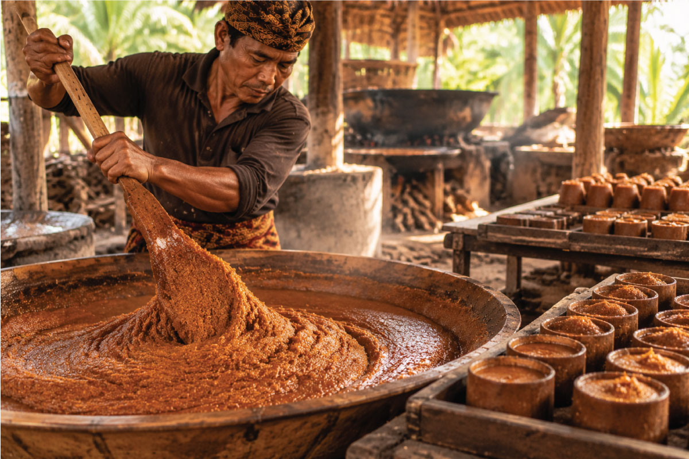

OUR PROCESS / 04
Pengkristalan Gula Aren
Dari gula aren cair menjadi butiran kristal yang praktis.

Setelah melalui proses pemasakan, gula aren berada dalam kondisi yang lebih pekat dan kemudian memasuki tahap pengkristalan.
Pada tahap ini, gula aren diproses hingga berubah menjadi butiran kristal dengan karakter yang khas. Proses dilakukan secara terkontrol dengan tetap memperhatikan kebersihan dan kualitas produk.
Perubahan dari gula aren cair menjadi kristal merupakan salah satu tahap penting dalam perjalanan produk. Di sinilah hasil dari nira pilihan dan proses pengolahan sebelumnya diwujudkan menjadi bentuk gula aren yang lebih praktis.
Setiap butiran membawa karakter yang terbentuk dari perjalanan panjang sejak nira dipanen hingga melalui proses pengolahan.
Dalam bentuk kristal, gula aren menjadi lebih mudah digunakan untuk berbagai kebutuhan, mulai dari minuman, kopi, teh, baking, dessert, hingga kebutuhan kuliner dan bisnis.
Bentuk kristal membuat gula aren lebih mudah ditakar, disimpan, dan digunakan dalam berbagai kreasi.
Setelah proses pengkristalan selesai, gula aren dipersiapkan untuk memasuki tahap akhir, yaitu pengemasan, sebelum akhirnya siap digunakan dan diterima oleh konsumen.